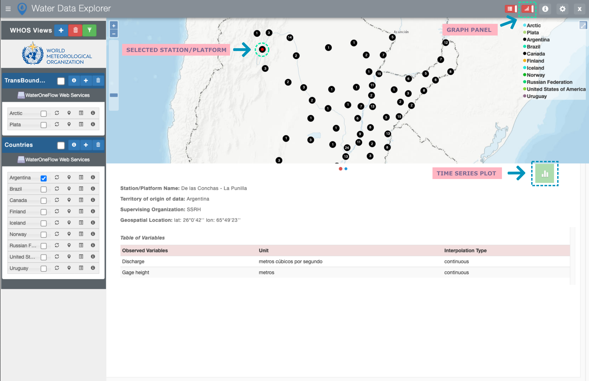

2. WDE User Functionalities¶
2.1. Data Discovery¶
The user can filter the available Views by countries and variables of interest.

Note
The user can update the variables to only display the variables of the selected countries in the country filter portion by
using the  Button.
Button.
To display the available stations/platforms of a specific View on the map, the user should use the “Show/Hide View” icon. To see the available variables of a specific View, the user should use the “View variables” icon. To display the information about a specific View including description, endpoint, and list of stations as well as the available analysis tools, the user should use the “Information” icon. To zoom to a specific View on the map, the user should use the “Zoom to View” icon.
Note
To have the data and information of a specific View up to date, the user should update the View by using the  icon.
icon.

2.2. Data Analysis¶
The Water Data Explorer application uses a python package called “Pywaterml”. The Pywaterml allows access to WaterOneFlow (WOF) web services and retrieves information in different formats. The Pywaterml can be used in Python Notebook.
Users can open a Python notebook tutorial and the Pywaterml documentation by using the “Google Colab” and “Pywaterml Documentation” icons.
Users can also open in Google Colab a Python notebook template for the selected View containing the Pywaterml functionalities. The Python notebook can also be downloaded for a specific station/platform and specific variable.

2.3. Time Series Visualization and Downloading¶
To visualize and download time series available for a specific station, the user should select a station of interest on the WDE map interface, thus opening the WDE Graphs Panel at the bottom of the application. To select the time series of interest to be visualized or downloaded, user should select the “Time Series Plot” icon on the top right of the Graphs Panel.
{kind=link}
Note
Image of the show hide icon. User can hide or show the Graphs Panel by means of the “Graphs Panel” icon on the right of the application header.
In the opened window, User can select a variable of interest, plot type, and time period of interest
Note
Image of the menu WDE uses the Plotly library, which allows users to download plots in PNG format, pan to, zoom in/out, and autoscale plots.